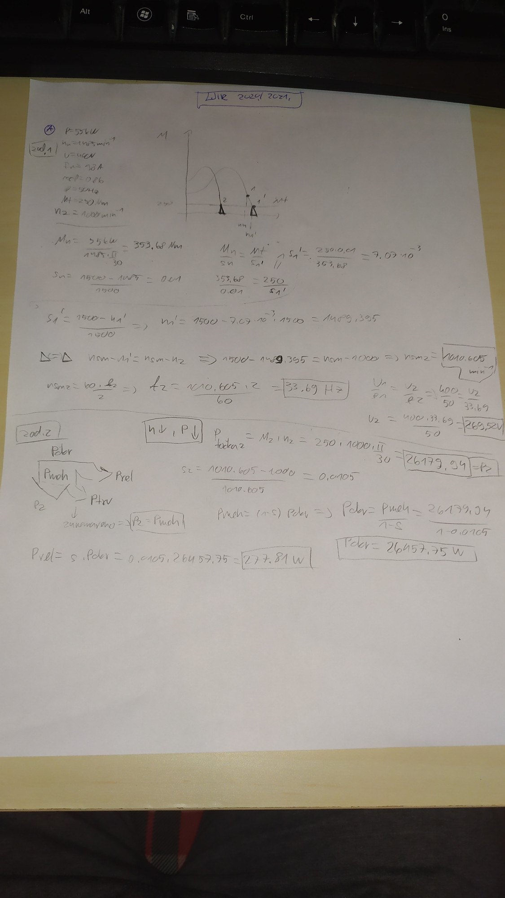
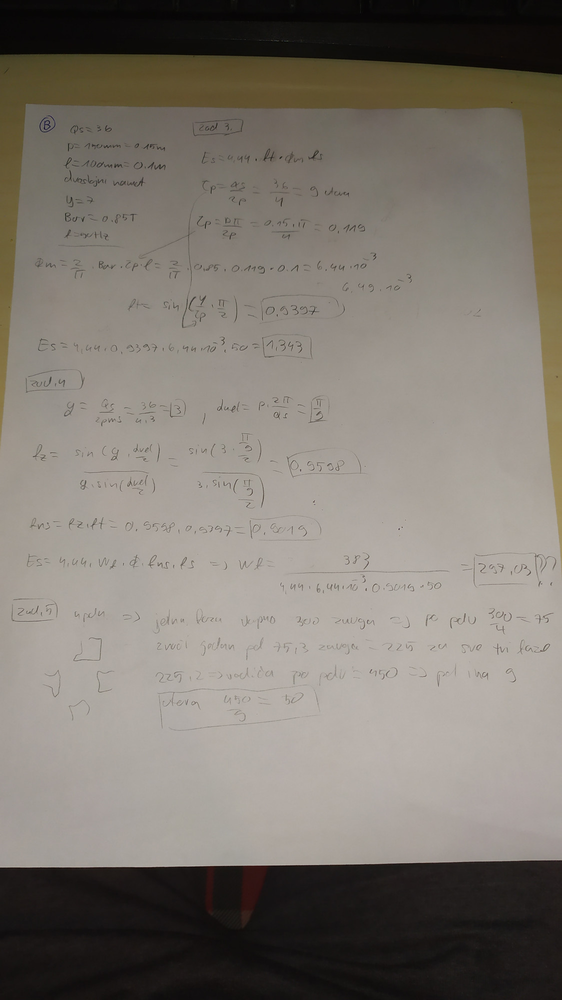
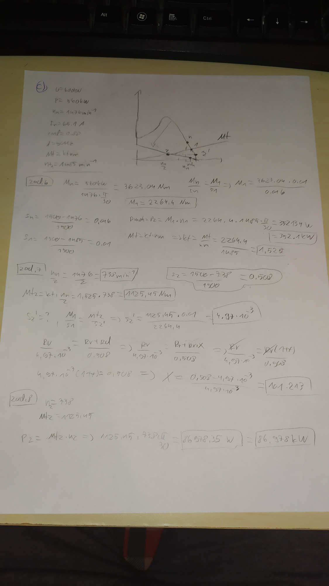
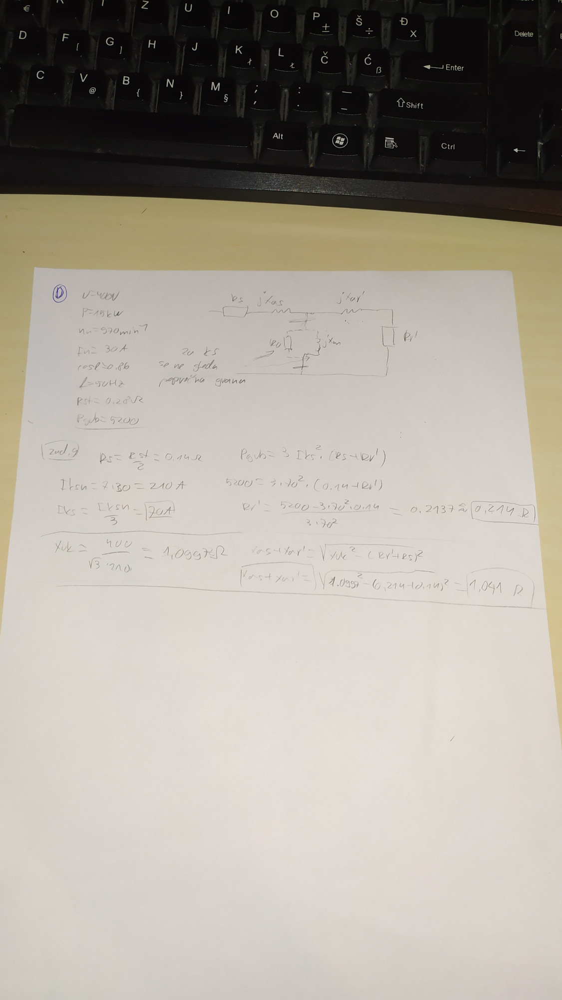
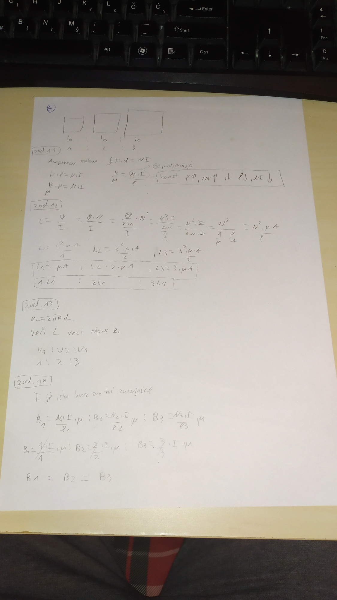
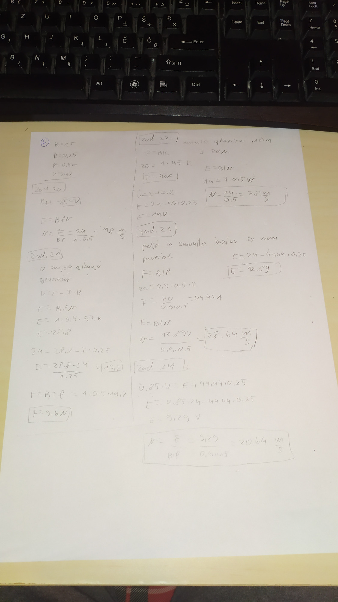
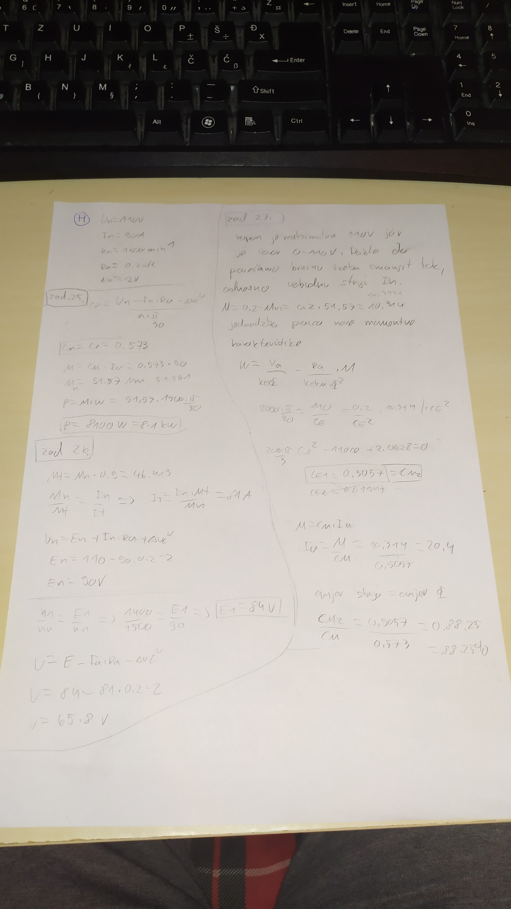
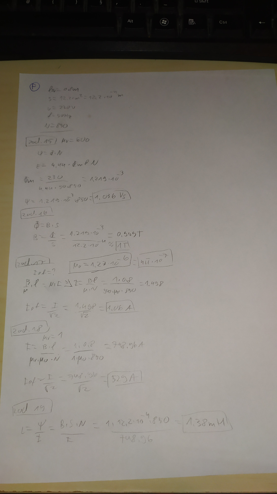

Evo kolege rijesen LJIR. Ne potvrđujem da su rješenja sto posto tocna ali mogu bar okvirno pomoc. Isto tako B zadatak nisam imao bas predodzbu kako to odma rijesit pa mi je vjv krivo. Isto tako zadnji H zadnja dva nesto dobivam odstupanje na decimalama a neznam zasto. Ako neko vidi gresku neka slobodno javi da ispravimo. Inace budem sutra probao i ZIR rijesit ako stignem.